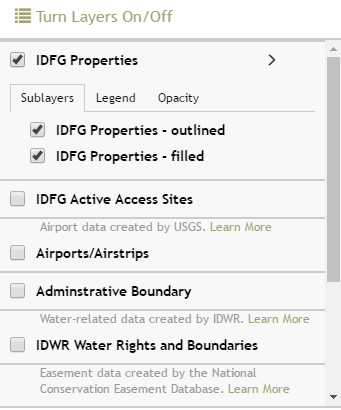

Turn Layers On/Off
TURN LAYERS ON/OFF

Toggle a layer on/off in the Turn Layers On/Off window by checking/unchecking the checkbox in front of its layer name.
Increase/decrease layer transparency using the slider at the top of each layer group. This is especially useful for the Land Management Layer; it is currently set at 50% transparency so you can see other layers and the basemap under it.
IMPORTANT: All of the layers listed can be very useful for exploring IDFG property data or creating a custom map but the IDFG properties layer is the only layer queried when using the Search For Properties content panel.
To identify a feature on the map you can click on it and the Popup Information Boxes will open.
Layer Descriptions:
- IDFG Properties: there are two versions listed but these are really the same layer just displayed differently as shaded or outlined only. This layer is a geospatial representation of the properties listed in the Lands Database. Various private, state, and federal entities have entered into agreements with or sold lands to IDFG for the management of the state's fish and wildlife. Each property agreement/lease/deed/easement/permit in Bob Martin's (IDFG) Lands Database was mapped based on their legal descriptions. This layer was created by combining the mapping efforts of Pamela Bond and Angie Schmidt of IDFG and the Idaho Department of Lands. Much of the lands owned by IDFG or leased from IDL can be searched for viewed on the IDL website: http://gis1.idl.idaho.gov. NOTE: Not all records in the Lands Database has a corresponding geospatial feature mainly due to poor legal descriptions.
- NCED Conservation Easements: This layer is depicts all, not just IDFG, conservation easements in the state of Idaho. For more information about the National Conservation Easement Database, please visit their website: http://conservationeasement.us/.
- Water Rights - Points of Diversion & Water Rights - Place of Use: Points of Diversion (POD) and Place of Use (POU) represent where water is diverted or used from live flow either surface water or ground water (ie springs, stream or a well), to be put to beneficial use under a water right. A Water Right (WR) must have at least one, and may have many POD's. The water use(s) for which diverted water is put can be found under the WR's place of use shape(s) or report. The WR url attribute links to the water right report. For each WR, any or all POD's can serve any or all uses. Shapes for POD's and POU's were initially developed from GCDB as QQ or QQQ centroids based on the POD legal description. Over time better locational information updates the POD or POU shapes. The locational determination of a POD can be found in the DataSource attribute of the layer. A water right (WR) can be in one or more of six processes or stages: Application for a new WR or transfer. Permit for applicant to develop the water use. License through which IDWR has approved final configuration and amounts. Claim is a WR or Beneficial Use which has been claimed in an adjudication. Recommendation is what IDWR recommends to the court during an adjudication. A Recommendation, when approved by the court, is decreed and supersedes its License if one previously existed. Transfer of a portion of the WR or claim is generally through a change of ownership, or change in one or more elements of the WR or claim. For more information about water rights in Idaho see the IDWR Web page at http://www.idwr.idaho.gov/WaterManagement/default.htm
- IDWR (Surface) Water Districts: Water districts are government entities with authority to raise assessments for the purpose of making local improvements or to assist state agencies in performing certain statutory functions related to water distribution within the districts.
- IDWR Ground Water Districts: Ground Water Districts can perform the measurement and reporting functions required by law and levy assessments like Water Measurement Districts. Additionally, Ground Water Districts may represent their members in various water use issues and related legal matters, develop and operate mitigation and recharge plans, as well as perform other duties.
- Fishing & Boating Access Sites: Idaho fishing and boating access sites managed by IDFG.
- Administrative Boundaries: created by IDFG, BLM, and USFS. Useful layers for navigation and context.
For more information about Wildlife Management Areas: http://fishandgame.idaho.gov/public/wildlife/wma/
WMA desktop interactive map application: http://fishandgame.idaho.gov/ifwis/maps/wma/
National Forest Administrative Boundaries: The lands administered by a USFS administrative unit. The area encompasses private lands, other governmental agency lands, and may contain NF lands within the proclaimed boundaries of another administrative unit. All NF lands fall within one and only one administrative forest area. http://data.fs.usda.gov/geodata/edw/edw_resources/meta/S_USA.AdministrativeForest.xml
- FAA Airports/Airstrips: created by the Federal Aviation Administration. Click on an airport to get more information. More Information
- Campgrounds: created by Idaho Dept. of Parks and Recreation. Click on a campground to get a popup box with information such as phone number, fees, # of Sites, who administers the site, etc. Map Service URL
- Roads & Trails: created by Idaho Dept. of Parks and Recreation using USFS Motor Vehicle Use Map and BLM Road data. NOTE: If these layers is grayed-out, it has a scale-dependency set on it and you need to zoom in until it becomes active. If you would like to see more information about a specific road/trail, use the Idaho Trails Map (http://www.trails.idaho.gov/trails/).
- Township Range Section: This layer depicts township, range, section, and quarter-quarter lines, depending on the scale it is viewed at. This map service contains Public Land Survey System (PLSS) data for most of the USA. The PLSS is a method used in the United States to survey and identify land parcels, particularly for titles and deeds of rural, wild or undeveloped land. Its basic units of area are the township and section (First Division and Second Division) The primary source for the data is cadastral survey records housed by the BLM supplemented with local records and geographic control coordinates from states, counties as well as other federal agencies such as the USGS and USFS. The data has been converted from source documents to digital form and transferred into a GIS format that is compliant with FGDC Cadastral Data Content Standards and Guidelines for publication. This data is optimized for data publication and sharing rather than for specific "production" or operation and maintenance. The data represented here include the following: • PLSS Townships – These are rectangular grids that are approximately 6 miles square. • First Divisions – Also referred to as sections is a one-square-mile block of land which is approximately one thirty-sixth of a township. Due to the curvature of the earth, sections/first divisions may occasionally be slightly smaller than one square mile. • Second Divisions – A quarter-quarter section or sixteenth of the first division. It represents the smallest division in the hierarchical break down of the PLSS Rectangular surveys.
- IDL Endowment Lands Layer: created by Idaho Department of Lands. This layer shows lands designated as Yes or No public access. Yes: these lands can be accessed by foot or water. Some lands may have motorized access. No: these lands are not accessible because they are surrounded by private landowners or because activities occurring on the lands make them unsafe for the public, such as within a military training area. More Information
- State & Federal Land Management Layer: created by BLM. This layer displays the managing agency, not owner, of the surface of the land. This Surface Management Agency GIS dataset is not a legal document and should be used as a general guide only. Metadata
Layer Updates:
- All IDFG properties layers will be up-to-date at all times.
- IDWR water right layers will be updated as needed.
- NCED data will be updated once a year sometime after June.
- Fishing & Boating Access Sites will be updated approximately one a year.
- Land Management data will be updated infrequently - optimistically, once a year.
- There is no plan to update the Township Range Section data as they should change very infrequently.
Created with the Personal Edition of HelpNDoc: Free EPub producer